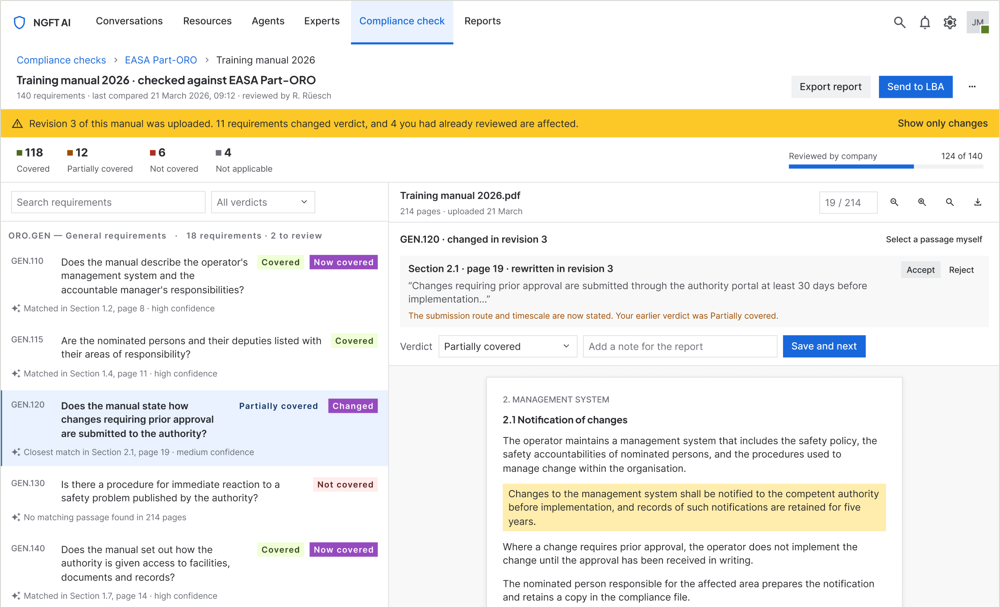
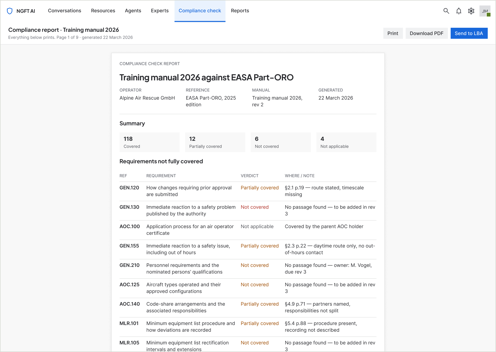
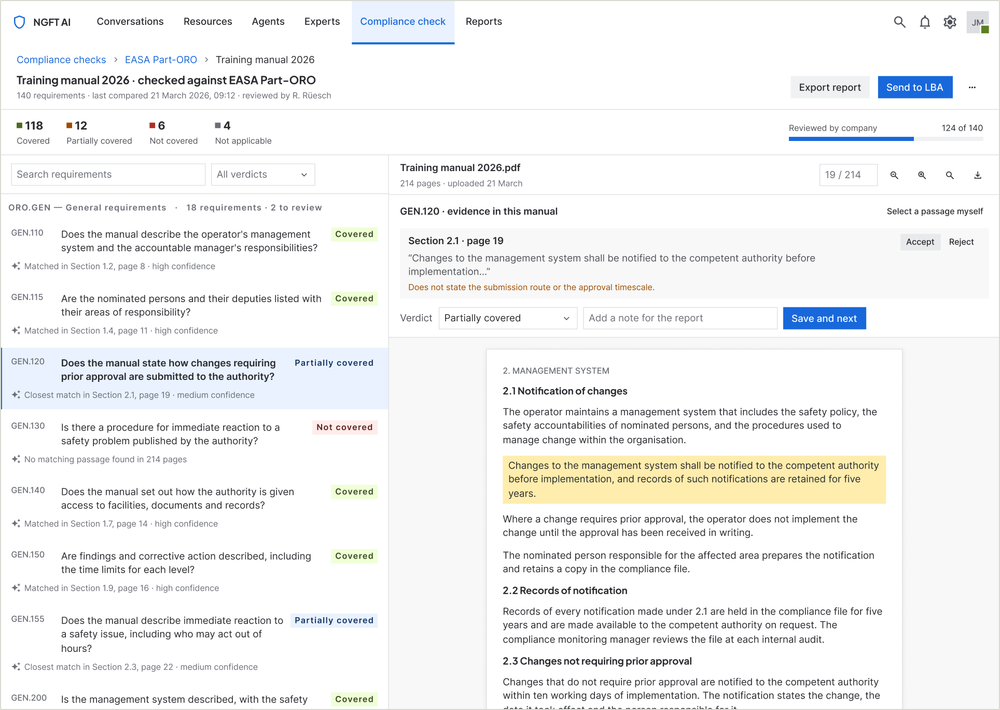
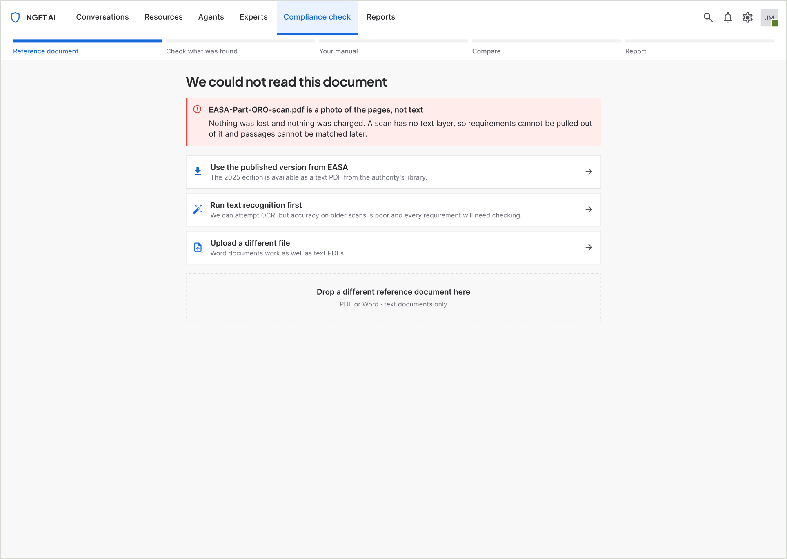
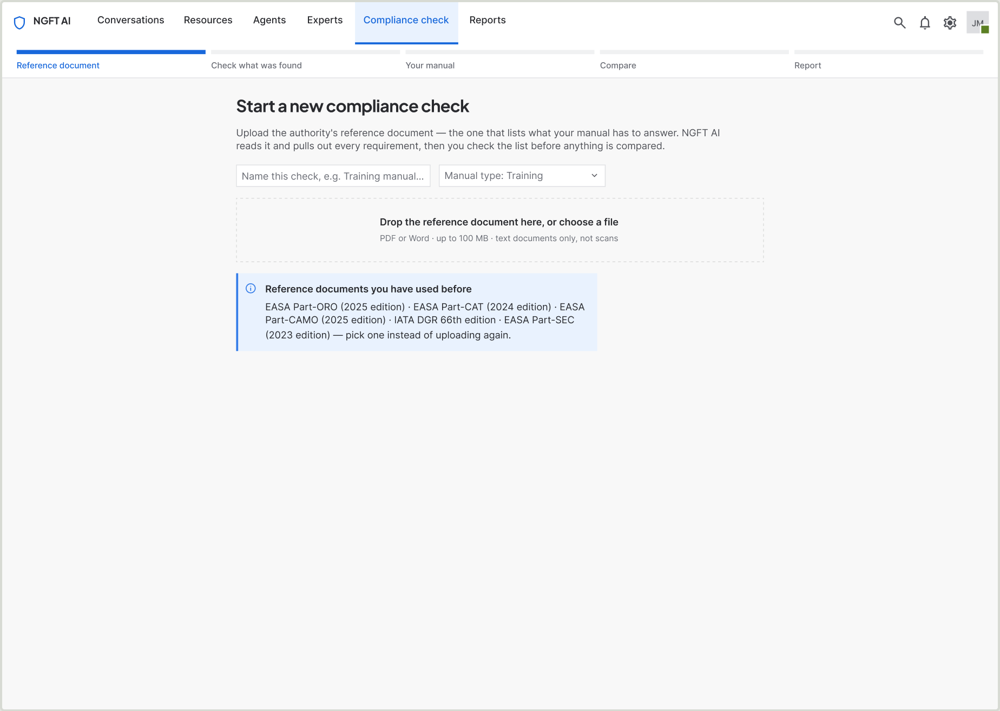
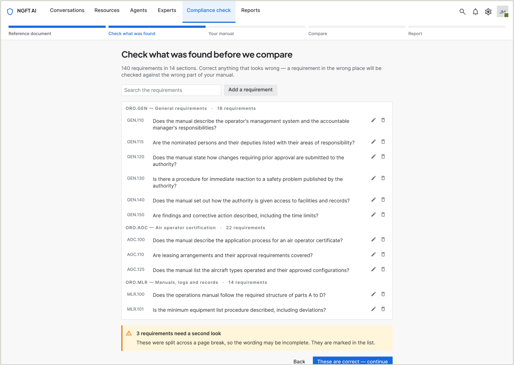
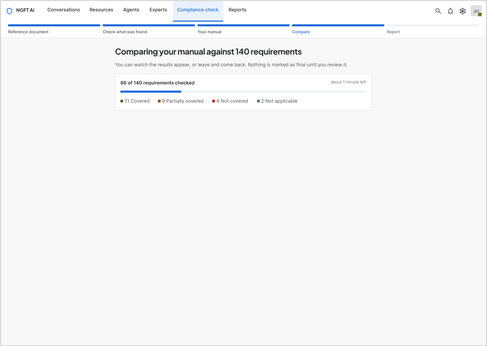
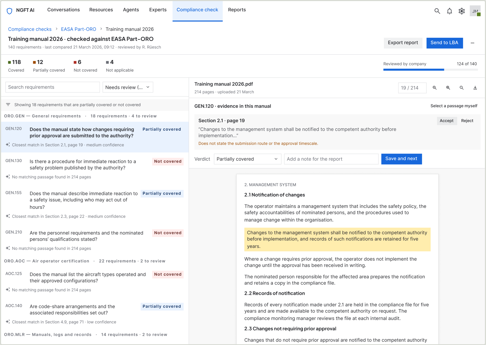
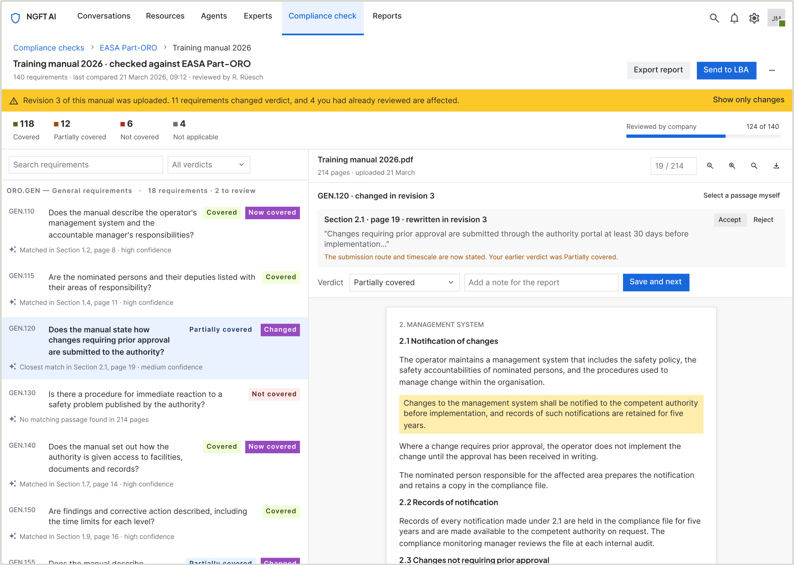
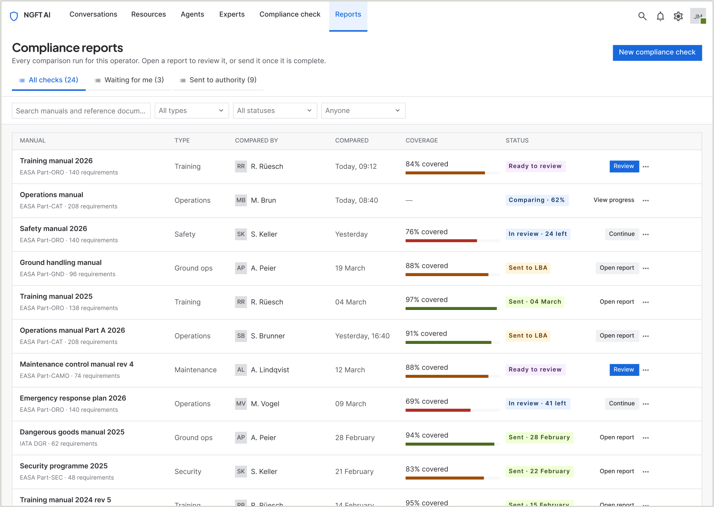

AI review · Manual compliance check
Without five days of reading two documents side by side
European helicopter operators have to show that their operations manual answers every requirement in the relevant EASA reference document. They do it by hand, page against page, and the operators I spoke to put a single pass at five to six days. I designed the feature that does the comparison and — more importantly — records why each answer was accepted.

Check 10 · The manual was revised mid-review.
01By the numbers
5–6 days
what one check takes today, as described by operators
10 people
interviewed and observed, across 8 helicopter operators
5 steps
from reference document to a report that can be handed over
4 verdicts
covered, partially, not covered, not applicable
15 screens
the whole flow including every failure state
Zero
new components added while designing the feature — it is built entirely from the existing design system
1 month
to design, prototype and test before development started
2 people
the whole team — one designer, one domain expert
02Context and constraints
A brief from inside the building
NGFT builds software for eight helicopter operators across Europe. It also runs pilot training, which means it writes and revises its own manuals under exactly the rules its customers work to. The brief did not arrive as a customer ticket — leadership had lived the problem and believed there was a product in it. The commercial goals were to reduce support load and to win new accounts.
| What was fixed | What that meant |
|---|---|
| Three months from brief to shipped MVP | I spent the first month on design and validation, and treated the tested prototype as the specification handed to engineering. |
| It had to live inside the existing AI product | No new navigation model and no new visual language. The check is a section of a product these people already have open. |
| The existing design system | I set myself a harder version of this constraint: build the entire feature without adding a single component to the library. |
| Nothing else | No frozen data model, no backend limit, no legacy screen to preserve. Worth saying plainly — the constraints here were time and coherence, not technology. |
03Understanding the user
Ten people at eight operators
I spoke to ten people across the eight operators the company already works with. Later in the month I went back to the same ten with rough prototypes and watched them try to use it, which turned out to be the more useful half of the research.
Who does this
Accountable Managers, Chief Pilots, Safety Managers, Maintenance Managers. Usually one person owns a manual; on a long one a team splits the parts between them.
They are pilots and seasoned safety managers — expert in the regulation in a way I will never be, and not a software audience. They open the product to discharge a legal responsibility, not to explore a tool.
What they do today
Download the reference document from the EASA website. Write the manual. Then read both documents side by side and verify the manual question by question, requirement by requirement.
When they are satisfied, they send it to the authority. Five to six days per pass, repeated every time a manual is written or revised.
What goes wrong
Back and forth with the authority, and rework whenever a requirement turns out not to be covered.
The expensive part is not the reading. It is discovering the gap after submission, when the fix costs a revision cycle instead of an afternoon — and nobody can reconstruct why the requirement was ticked in the first place.
04The finding that moved the design
One sentence changed what I was building
“I know the system you are building is good, but I would also like a report at the end of the process, so I can keep it as evidence if the higher-ups ask for it.”
I had been designing a comparison tool. He was describing an evidence tool. The comparison is only the means — the thing these people are actually accountable for is a document they can hand to someone else and defend months later.
That moved the report out of the "export" menu and into the flow as a designed step. It also changed the compare screen, because if the report is the deliverable then every verdict on it has to carry the passage that justifies it. Otherwise the report is an opinion with a percentage on top.

05Diagnosis
Three symptoms, one cause
The operators named three problems. They are not three problems.
Five to six days
of reading two documents against each other
Back and forth
with the authority after submission
Rework
whenever a requirement turns out not to be covered
The cause is that the requirement and the evidence never sit in the same place. The reference document is in one window, the manual is in another, and the judgement joining them exists only in one person's head until it is typed into a submission. Nothing records why a requirement was considered answered — so nothing can be re-checked, handed over, or defended.
That is also why the cost lands after submission rather than during the reading. A person can read carefully for five days and still have no artefact proving they did.
So the problem is not “compare two documents faster”. It is “make every judgement traceable to the passage that supports it” — and the speed follows from that, rather than the other way round.
06The design
Five steps, and an argument about which one comes second
The obvious flow is upload, upload, compare, report. I put a verification step second instead, before the manual is even uploaded.
-
01
Upload the reference document
The EASA document that lists what the manual has to answer. Previously used ones can be picked instead of uploaded again.
-
02
Check what was found
The system extracts every requirement and shows them, grouped by section, before anything is compared. The user corrects them here.
-
03
Upload your manual
Their own document, with a reminder of what it is about to be measured against.
-
04
Compare, side by side
Requirements on the left, the manual on the right. Clicking a requirement scrolls the manual to the passage that matched it.
-
05
Report
Counts, then every requirement that is not fully covered, with the section and page that answers it or the note saying why it does not.

07The decisions
Five decisions that shaped every screen
-
Verify before you compare
Extraction is the step most likely to be silently wrong, so step 02 exists only to let a person correct the requirements before anything is measured against them. A requirement filed under the wrong section gets checked against the wrong part of the manual — and the result still looks confident.
-
The evidence sits next to the verdict
Clicking a requirement scrolls the manual to the passage that matched and highlights it. Verdict, passage and comment live in one bar. Nothing about a judgement is more than a glance away from the thing that justifies it.
-
Four verdicts, not two
Covered, Partially covered, Not covered, Not applicable. Pass/fail would have been simpler and useless — "partially covered" is where the actual work is, and "not applicable" is how an operator says a requirement belongs to someone else without pretending it passed.
-
Confidence is a sentence, not a score
"Closest match in Section 2.1, page 19 · medium confidence" tells you what to do next. "0.62" does not. These are people who will be asked to defend the answer, not to tune a model.
-
The person decides, always
Every verdict can be changed, every match accepted or rejected, and when the system finds nothing the user can point at the passage themselves. The system brings the candidate and the evidence together. The signature at the bottom of the report is human.
08Failure states
Six states where things go wrong
This is a document that gets submitted to a regulator. What the product does when it is unsure matters more than what it does when it is right — so the failure states were designed at the same time as the happy path, not bolted on after.
| When | What the person sees | The way out |
|---|---|---|
| The document cannot be read | Named plainly: the file is a photo of the pages, not text. Nothing was lost and nothing was charged. | Three routes, each a real option: use the published EASA version, run text recognition with an honest warning about accuracy, or upload a different file. |
| Nothing matched a requirement | "No matching passage found in 214 pages" — the scope of the search is stated, so the absence means something. | Point at the passage yourself. The verdict updates from the person, not the system. |
| The match is weak | Said in words on the row: closest match, section, page, medium or low confidence. | Accept, reject, or select a different passage. |
| The manual was revised mid-review | A banner naming how many verdicts changed and how many of those you had already reviewed. | Show only the changes. Regressions are marked as clearly as improvements. |
| Nothing to review yet | An empty reports list that explains what will appear here. | The one action that matters: start a check. |
| The report has been sent | The check locks. Actions are removed rather than greyed out, and the record of what was submitted stays intact. | Start a new revision — the old report survives as evidence. |

09System work
Nothing new in the library
Fifteen screens, and not one new component while the feature was being designed. That was a constraint I set for myself, and it is the reason the feature looks like the rest of the product rather than like a bolt-on.
The seven-column problem
The reports table needs seven columns. The library's Table row has five fixed cells. I composed the row from existing atoms — Avatar, Lozenge, Button — instead of forking the component. Forking would have been faster and would have started the fragmentation the library had so far avoided.
Tokens, not values
Every colour is bound to a theme variable and every gap to a spacing token, so the whole feature re-themes in dark mode without a single manual edit.
One component, added afterwards
Five screens were each hand-drawing their own step rail. That is the moment a pattern has earned a component, so a Stepper went into the library and replaced every hand-built rail. Adding it during the design would have been premature; adding it once five screens repeated it was maintenance.
10Validation
The same ten people, twice
I interviewed them at the start of the month. At the end of it I went back to the same ten with something they could click.
The prototypes were rough and assembled quickly with AI — enough to be operable, not enough to be admired. I put them in front of the same ten people on calls and asked them to do the task while I watched and took notes: what they clicked, where they hesitated, what they expected to happen next.
That is the part I would defend hardest. Asking someone whether they like a screen produces a compliment. Asking them to complete a job produces a design change. The improved prototype then went to development as the specification.
11Where it stands
What I can claim, and what I cannot
The MVP is live inside the product and in beta with the operators who described the problem. Here is the honest split.
What shipped
- The full five-step flow, live in beta.
- The report the research asked for — not an export tucked in a menu, a designed step of the flow.
- Fifteen screens covering the whole path including every failure state.
- Reception has been positive. There was no pushback on the approach from users or from the team, and feedback collection is ongoing.
What is not measured yet
- Whether it actually removes the five to six days. There is no instrumentation and no before-and-after measurement.
- Whether it reduces the back-and-forth with the authority. That needs a full submission cycle to play out.
- Whether it wins accounts. Far too early to say.
- I would rather name these three gaps than borrow a number. They are what the next quarter is for.
12Reflection
What I would do differently
The order of the work
Design and validation ran a month ahead of engineering, and the tested prototype became the specification. For a fixed three-month window that was the right trade — ten sessions happened before a line of code was written, so what shipped had already been shaped by the people who would use it.
What it cost was a loop during the build. Things I would have changed after seeing them running had to wait for the next release. Next time I would hold a week of design capacity back for the build phase instead of spending all of it up front.
The report was not my idea
I had designed a comparison tool. One sentence from one participant showed me I had designed the middle of the job and stopped before the end of it.
What users ask for often names the outcome they are accountable for rather than the feature they want. He asked for a report; what he meant was that he is the person who has to answer for the manual. That is worth listening for.
13What is next
The other half of the loop
Today the operator produces the report and the authority signs it outside the system, on paper or as a PDF. That is the seam the MVP deliberately left alone.
The authority side
I am designing a way for the authority to receive the report and sign it inside the product, so the submission and the signature stop being two different systems.
Beta feedback
Beta users are using it now and telling us what is missing. That queue is what the next release is built from.
The report page itself
It is deliberately temporary. It lives inside the product as an MVP and will be revisited once there is evidence of how people actually use the output.
14The rest of the flow
Fifteen screens, start to finish
The three screens above carry the argument. These are the rest of the path a person walks, from an empty upload box to a list of every check the company has ever run.
-

01 · Upload the reference document
Name the check, pick a manual type, drop the EASA document. Documents used before can be picked instead of uploaded again.
-

03 · Check what was found
Every extracted requirement, grouped by section, editable — before anything is compared against it.
-

05 · Comparing
Live counts by verdict while it runs. You can leave and come back; nothing is final until a person reviews it.
-

09 · Filtered to what needs review
Eighteen requirements that are partially covered or not covered, and nothing else. The filter is the working view.
-

10 · The manual was revised mid-review
Eleven verdicts changed and four you had already reviewed are affected. Improvements and regressions are marked equally.
-

14 · Every check the company has run
Who compared it, when, how much is covered, and whether the report is ready to review or already with the authority.
Built in Figma from the company’s design system. Every screen above is a real frame in the file, not a mockup of one.